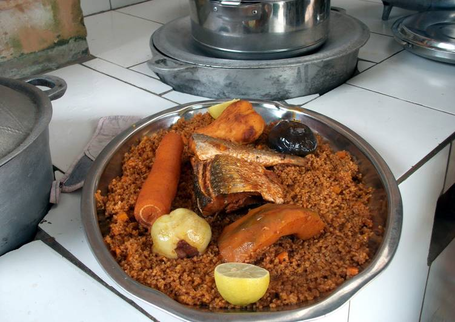

Jollof Rice(Gambian Style)

Ingredients
MAIN
- 2 lb Fresh fish
- 2 cup Vegetable oil
- 6 cup Water
- 1 medium Fresh tomato
- 2 large Onions
- 1 small Cabbage
- 2 medium Carrots
- 2 Bay leaves
- 4 cups Of rice
Instructions
- Clean and cut fish in halves.
- Fry the fish in the vegetable oil until both sides are brown.
- Remove fish and add onions, fresh tomato and paste to the hot oil and fry until brown.
- Pour water and bring to boil, then include cabbage, carrots, bay leaf, add seasonings, reduce heat and simmer for 20 mins.
- Remove vegetables and add the rice while continuously stirring.
- Reduce heat and cover the pot. Simmer for 10 mins.